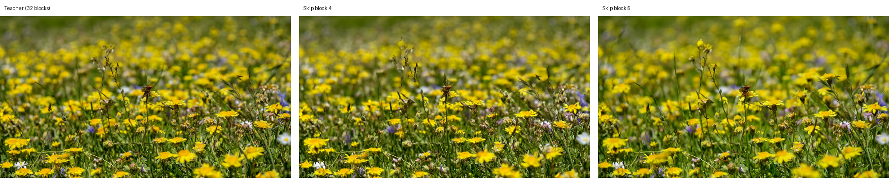
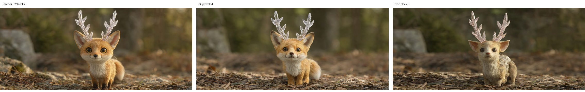
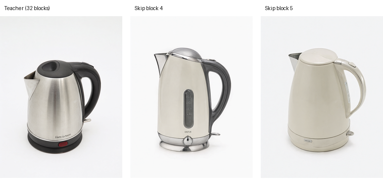
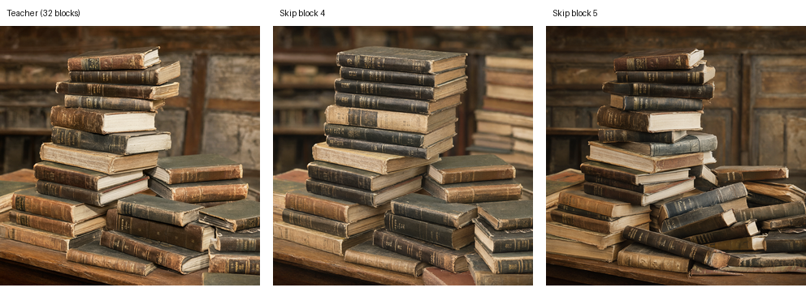

Research notebook | updated
Nihonga 日本画
A smaller image model, with every cut measured.
We are compressing Qwen-Image-2.1: identify transformer blocks that can be replaced, learn inexpensive bridges, and distill the original model’s behavior back into the student. This is our working research record, including results that did not work.
Phases 0–2 · establish the reference
Understand the model before removing anything
The inspected transformer has 32 blocks, a hidden width of 4,096, and approximately 7.115 billion parameters. The 60-layer examples in the original plan are illustrative; our experiments use this actual 32-block architecture. The model predicts a velocity that updates the noisy latent at each denoising step; the VAE decodes the final latent into an image.
What “internal” means
Internal means our own synthetic prompt dataset, built for this compression project. It is separate from Qwen-Image-Bench. The “Internal” baseline row is specifically its 1,007-prompt held-out internal-test split, not the training set and not all 20,000 pilot prompts. Qwen-Image-Bench supplies the other two rows, with the same 1,000 benchmark items evaluated in Chinese and English.
Why build our own dataset?
We need prompts to train the bridges and heal the student without training on benchmark questions. We also need validation prompts for choosing checkpoints and a separate test set for evaluating changes. A broad synthetic corpus lets us deliberately cover counting, spatial relations, text rendering, materials, scenes and visual styles instead of relying on whichever examples happen to be easy. For distillation, the original image model supplies hidden states and velocity targets; real-image training pairs are not required for this stage.
How we created it
- 1 · structured prompts
- Generate a 100,000-prompt template pool across five capability groups and 38 subdimensions. Combine objects, counts, colors, relations, materials and scenes with difficulty levels 1–5, styles, prompt formats and aspect ratios. Exact normalized duplicate prompts are removed. Counting and spatial relations receive extra weight, and text rendering receives twice its unadjusted subdimension weight.
- 2 · stable partitions
- Assign deterministic IDs and seeds, stratify within capability/subdimension/difficulty, then select a 20,000-prompt prefix by a saved pool rank. The intended split is approximately 90% train, 5% validation and 5% internal test. The actual pilot sizes are 17,991 / 1,002 / 1,007. Split assignments remain fixed when growing the pool.
- 3 · natural language
- Use Qwen3-8B through vLLM on Modal to rewrite selected English prompts and translate about 10% into Chinese. Pure templates can cover a narrow set of sentence shapes; natural wording and Chinese prompts broaden the conditioning the student sees. Automatic checks try to preserve quoted text and key constraints; failed rewrites fall back to the original template. Raw responses are retained.
- 4 · benchmark separation
- Check normalized exact matches and English 6-word / Chinese 8-character n-gram overlap against a pinned Qwen-Image-Bench prompt snapshot, both before and after rewriting. At the configured 0.5 overlap threshold, the template-pool check removed zero prompts; no final rewrites were rejected for benchmark overlap. These checks reduce detectable contamination, but do not prove every prompt is semantically unrelated.
- 5 · serialize the record
- Save each prompt’s capability, subdimension, facet, difficulty, style, aspect ratio, language, source, original template, ID, seed and split. Save the generation configuration, raw LLM outputs, overlap checks, distributions and artifact hashes. Rerunning reads the existing results rather than generating the corpus again.
The 100,000-prompt master pool is the template reservoir. Natural-language rewriting and translation were completed for the 20,000-prompt pilot; we have not trained on all 100,000 prompts. The bars show the actual pilot distributions from the saved Phase 1 statistics, not planned quotas. Wording checks are automatic rather than a guarantee of perfect constraint preservation.
A saved internal-test example
Create a photorealistic café chalkboard displaying “Today’s special: tomato soup and grilled cheese” in legible chalk writing, soft shadows, mysterious atmosphere.
This held-out example tests long text rendering: creative generation, difficulty 5, photographic style, square aspect ratio, English LLM rewrite. Its seed and original template are saved. It is a test prompt, not a bridge-training example.
| Split / benchmark | Role | How used so far |
|---|---|---|
| Train · 17,991 prompts | Fit model parameters | 20 selected prompts in the bridge and healing pilots |
| Validation · 1,002 prompts | Choose candidates and checkpoints | 10 selected prompts, reused across the small pilots |
| Internal test · 1,007 prompts | Our held-out evaluation set | All baseline images; subsets for Phase 3 diagnostics |
| Qwen-Image-Bench · 1,000 bilingual items | External benchmark · evaluation only | 1,000 Chinese and 1,000 English baseline images |
The original image model baseline
We generated and judged 3,007 reference images: 1,000 Chinese benchmark prompts, 1,000 English benchmark prompts and 1,007 internal prompts. Another 301 paired regenerations measure generation-and-judge variation. Prompts, seeds, resolutions, scheduler settings, model revisions and judge outputs are saved.
| Evaluation set | Images | Overall | Prompt adherence | Text rendering |
|---|---|---|---|---|
| Bench Cn | 1000 | 53.62 | 54.64 | 43.59 |
| Bench En | 1000 | 53.67 | 53.88 | 41.69 |
| Internal | 1007 | 56.08 | 57.13 | 70.49 |
These are our local judge scores, not a claim of an official leaderboard result. Text scores cover only applicable prompts; contributing counts are included in the downloadable data. Judge calibration found an approximately 2.5-point aesthetics offset; the judge remains frozen for paired comparisons.
- Baseline speed
- 6.172 seconds per image on an H100 80 GB, batch size 1, 40 denoising steps; 80 timed calls across eight aspect ratios after warm-up.
- Baseline memory
- 36.92 GiB peak allocated VRAM across those calls. Student inference has not yet been benchmarked under the same protocol.
Phase 3 · measure the missing update
Similarity is a clue; images decide what it misses
We measured all 32 transformer blocks before choosing which ones to replace. On 64 prompts, at three denoising stages, we compared the hidden states entering and leaving every block. Blocks 2, 3, 4 and 5 had the smallest consistent changes, so we chose them as bridge candidates. The choice came from the measurements.
To make that choice, we took each block’s average relative L2 change at each of the three stages, kept the largest of those three averages, and ranked all 32 blocks from smallest to largest. The first four were blocks 2, 4, 5 and 3. After selecting them, we temporarily skipped each of those four blocks separately to measure how much that changed the model’s velocity prediction. The all-block activation comparison and the four-candidate bypass tests are two different experiments.
The initial candidate ranking
| Rank | Original block | Largest stage-average L2 change | Decision |
|---|---|---|---|
| 1 | 2 | 8.681% | Initial candidate |
| 2 | 4 | 9.574% | Initial candidate |
| 3 | 5 | 10.043% | Initial candidate |
| 4 | 3 | 10.881% | Initial candidate |
| 5 | 1 | 11.740% | Comparison context |
| 6 | 6 | 15.500% | Comparison context |
| 7 | 9 | 16.504% | Comparison context |
| 8 | 10 | 16.912% | Comparison context |
This rule favors blocks with consistently small updates across the sampled denoising stages, rather than a block that appears unimportant at only one stage. It is a ranking of local hidden-state changes, not yet bypass velocity errors or image quality. “Largest stage average” means the largest of three means over 64 prompts; it is not the worst individual prompt. The initial rank order is 2, 4, 5, 3; written in model order, the selected set is 2–5.
The activation measurements
We measured all 32 blocks on 64 fixed internal prompts at denoising steps 0, 19 and 39 of the 40-step teacher: 6,144 block/stage observations. Hooks compare image-token states immediately before and after each block, excluding the text prefix. Each cosine is averaged over image tokens, then across prompts. The table shows the four tested candidates; the graph and downloadable record cover every block.


- early · dashed
- middle · dotted
- final · solid
These views zoom into blocks 1–6, including a neighbor on each side of the tested 2–5 batch. The cosine axis is deliberately narrowed to 0.994–1.000; its larger-looking differences are still small absolute changes. Relative L2 is ‖h_out − h_in‖₂ / ‖h_in‖₂, reported as a percentage on a separate linear axis. Cosine compares direction; L2 also responds to changes in magnitude. The green wash identifies the tested batch, not an acceptance region.
Show all 32 blocks · full-range cosine and logarithmic relative L2


The L2 overview uses a log scale: equal vertical distances represent equal ratios rather than equal percentage-point changes. It preserves block 0’s update, which exceeds 800% of its input norm at the early stage, while keeping other blocks visible. All plotted observations fit the stated axes; none are clipped. The stage legend above applies to both overviews.
| Original block | Early cosine | Middle cosine | Final cosine |
|---|---|---|---|
| 2 | 0.998321 | 0.998597 | 0.997599 |
| 3 | 0.997110 | 0.998159 | 0.997847 |
| 4 | 0.996989 | 0.997281 | 0.997353 |
| 5 | 0.995830 | 0.996161 | 0.996551 |
| Original block | Early change | Middle change | Final change |
|---|---|---|---|
| 2 | 8.681% | 5.544% | 8.126% |
| 3 | 10.881% | 7.473% | 8.003% |
| 4 | 8.460% | 9.322% | 9.574% |
| 5 | 9.916% | 10.043% | 10.034% |
For example, block 2’s early cosine is 0.998321, but the update still has a norm equal to 8.681% of its input’s norm. High cosine does not imply a negligible update or 99.8% image quality. Block 1 and some later blocks also have high cosine; the shortlist was determined by the maximum stage-average relative L2 change, rather than cosine alone. These four earn a first test, not automatic approval for removal. Prompt-level distributions and per-capability aggregates are in the measurements.
What happens when each update is removed?
An identity bypass returns h_out = h_in, so the missing block contributes no update. We tested each candidate separately on the same five pilot prompts × three stages, using saved teacher-trajectory inputs and rebuilt student prefix caches. Each block has 15 velocity comparisons, with intact-teacher replay controls matching exactly within the diagnostic. These five-prompt Phase 3 probes are distinct from the later ten-prompt bridge-validation set.
| Skipped block | Early error | Middle error | Final error | Worst case |
|---|---|---|---|---|
| 2 | 16.407% | 4.145% | 18.962% | 21.396% |
| 3 | 15.801% | 3.442% | 11.854% | 18.531% |
| 4 | 10.811% | 2.687% | 5.433% | 17.797% |
| 5 | 12.740% | 2.813% | 3.687% | 17.003% |
Block 2 has the strongest activation similarity of the tested candidates early and in the middle, yet its omission causes the largest mean velocity errors at all three stages. Block 4 has the lowest mean bypass error early and in the middle; block 5 is lowest at the final stage. Similarity helps nominate experiments, but bypass sensitivity and finished images change the ranking.
The worst-case column is the largest error among that block’s 15 prompt/stage cases. Velocity error is a prediction difference, not a percentage of image-quality loss. These individual interventions do not establish that several blocks can be removed together, and no bridge is fitted in this diagnostic.
What the first image comparisons showed
Five prompts, one per capability, were generated with block 4 or block 5 skipped: ten bypass images. In the astronaut example, skipping block 4 loses the spacesuit. Skipping block 5 retains it. That initially favors block 5 for closer study, while all four candidates remain eligible for learned bridges.
Each sheet reads teacher / skip block 4 / skip block 5, left to right. These are identity-bypass images from Phase 3, before bridge training or healing. Teacher images came from an earlier run; unresolved cross-run variation limits causal pixel comparisons. Observations are manual, not a blinded quality study. Open any sheet at full resolution.

The teacher depicts an astronaut. The block-4 identity bypass loses the spacesuit; block 5 retains it, with a different pose and background.

All three retain the meadow, while flowers and composition change.

Both bypasses preserve the broad concept; proportions, fur and pose change.

The kettle design changes substantially; the prompt does not require the teacher’s exact design.

Stack arrangement and surface details change. Thumbnail inspection is not an aesthetic ranking.
Pixel MAE and PSNR record changes in composition and appearance, but do not directly measure prompt adherence or aesthetic quality. None of these identity bypasses is accepted as the finished model.
Phases 4–5 · recover the missing update cheaply
A small residual bridge in place of a full block
The bridge projects 4,096 features down to 256, applies GELU, projects back up, and adds the input: h′ = h + W_up GELU(W_down h). Each bridge has 2,097,152 parameters. We fit four independent candidates, replacing one original block at a time; the four bridges are not inserted together.


The student keeps the same 4,096-feature input and output interface. Only the correction travels through the 256-feature bottleneck; the residual path keeps the original information. GELU is a nonlinear transformation of those 256 features. The bridge processes each token separately without attention and learns to approximate the removed block’s update. The diagrams show shapes and operations, not identical teacher and student values or measured speedups. Open either diagram for the standalone SVG.
Bridge-only pretraining keeps the rest of the model frozen. Each candidate gets 500 updates using cached hidden states from 20 training prompts, with 10 validation prompts selecting checkpoints. The fitting objective balances prompt tokens and early, middle and late image tokens, combining normalized direction matching with a smaller relative squared-error term. Block 5’s selected checkpoint is update 300.
Does a better hidden-state fit improve the whole prediction?
We replay each identity and trained student against the verified teacher, using the same saved inputs at three stages. Each candidate has 30 comparisons; there are 240 student forwards across four candidates and two variants.
- identity bypass
- pretrained bridge
| Original block | Identity error | Bridge error | Relative reduction | Cases improved |
|---|---|---|---|---|
| 2 | 12.879% | 12.023% | 6.64% | 27 / 30 |
| 3 | 10.637% | 10.238% | 3.74% | 20 / 30 |
| 4 | 7.160% | 5.873% | 17.97% | 26 / 30 |
| 5 | 6.406% | 5.518% | 13.86% | 24 / 30 |
How to read the percentages. Velocity error is ‖student − teacher‖₂ / ‖teacher‖₂, averaged equally across prompts and stages. For block 2, 12.8788036% becomes 12.0234947%: a drop of 0.855309 percentage points. Dividing that drop by the original 12.8788036% gives a 6.64% relative reduction. This is a fraction of prediction error removed, not an image-quality improvement. “27 / 30” counts the cases with lower error.
Block 5 has the lowest mean trained error, 5.518%, and a worst case of 15.095%, so it is selected for the healing pilot. Block 4 removes a larger fraction of its identity error but ends at a slightly higher mean, 5.873%. Block 3 slightly regresses at the early and middle stages despite improving its overall mean. The small reused validation set does not establish statistical superiority.
Phase 6 · first make the supervision repeatable
A replay discrepancy paused training
Fresh teacher predictions initially disagreed with historical saved velocities beyond our 0.1% relative-L2 tolerance. Repeating a forward in the same process was stable, and full tensor-state fingerprints matched across fresh processes. The exact cause of the historical discrepancy remains unresolved.
The numerical contract we verified
We pinned the model revision and transformer source, H100 hardware and software versions, BF16 weights, deterministic algorithms, math attention, TF32 and reduction settings, exact input order and cache lifecycle. Each prompt gets a fresh cache; early-stage conditioning is extracted before cached middle and late forwards. Reference files are loaded after predictions are made. The audit covers 301 state tensors, including otherwise unregistered positional tables.
Under this contract, all 90 teacher predictions match the new saved references exactly. Historical targets and weights remain preserved. This establishes a working repeatable setup; it does not isolate which individual setting caused the old mismatch or prove that every setting is necessary.
Did the bridges need to be trained again?
We captured 360 fresh block/stage hidden-state pairs for the same 30 prompts and token selections. Frozen bridge validation objectives differ from the historical objectives by less than 0.05%. The replay change alone therefore does not justify replacing the Phase 5 training results.
| Block | Fresh hidden-fit objective | Reduction vs identity | Change vs historical fit |
|---|---|---|---|
| 2 | 0.003969 | 45.53% | -0.0082% |
| 3 | 0.005213 | 38.00% | -0.0432% |
| 4 | 0.005037 | 49.70% | +0.0175% |
| 5 | 0.006712 | 61.40% | -0.0273% |
The hidden-fit objective combines direction and relative squared errors; it has no direct percentage interpretation. Its 38–61% reductions cannot be compared as if they were the same metric as the 3.74–17.97% velocity-error reductions.
Phase 6 | architecture healing
The full student was trained; update 0 still wins
The original teacher has 32 transformer blocks. The current student has 31 surviving blocks and one pretrained bridge at slot 5. Phase 5 trained that bridge to replace the missing block's hidden-state update. Phase 6 then tested whether further training helps the student match the teacher's denoising velocity at the same prompt, noisy latent and timestep. Both models still use 40 denoising steps.
The intended healing pass updates the entire student: all surviving transformer weights and the single bridge, 6,899,117,824 parameters in total. The teacher stays frozen. We attached no LoRA in the full-student runs. A separate LoRA for few-step speed distillation belongs to a later phase.
| Experiment | Trainable weights | Updates | Final validation error | Selected update |
|---|---|---|---|---|
| Bridge + LoRA, rate 0.0001 | 10,223,616 | 120 | 7.188% | 0 |
| Bridge + LoRA, rate 0.00001 | 10,223,616 | 120 | 6.113% | 0 |
| Bridge only, rate 0.0001 | 2,097,152 | 120 | 6.153% | 0 |
| Full student, rate 0.0001 | 6,899,117,824 | 60 | 54.387% | 0 |
| Full student, rate 0.000001 | 6,899,117,824 | 60 | 5.654% | 0 |
All five pilots began at 5.518% with the pretrained bridge. Every saved training run selected update 0. The bridge + LoRA and bridge-only trials are diagnostic ablations; the two full-student trials answer the intended healing-scope question. A passed run means its execution controls passed, not that its trained checkpoint improved quality.
How the full-student trials worked
Each run made 60 shuffled updates from 20 training prompts at three saved noise stages. The loss combined teacher-student velocity error, hidden-state alignment at surviving slots 2-4, and bridge output alignment at slot 5. Ten different validation prompts chose among updates 0, 30 and 60. Exact teacher replay, baseline reproduction, gradient flow to the bridge and surviving weights, and selected-checkpoint reload were checked. Checkpoints, optimizer state, predictions, reports and hashes were saved separately.
| Updates | Rate 0.0001 | Rate 0.000001 |
|---|---|---|
| 0 | 5.518% | 5.518% |
| 30 | 38.183% | 5.585% |
| 60 | 54.387% | 5.654% |
At update 60 the 0.0001 run reached 54.387%, a severe regression. Reducing the rate 100-fold kept the run near baseline, but its 5.654% still exceeded 5.518%. These short runs therefore did not produce a better healed student. They do not establish whether broader data, different loss weights or another optimizer could help.
A closer look at the lower-rate run shows why its mean can rise despite local gains: 21 of 30 validation prompt/stage comparisons improved, but the early-noise average rose from 9.947% to 10.371%. The largest regressions were early-noise cases. This is a small, reused validation set; the pattern guides diagnosis but does not identify a cause.
What the generated images show
We generated 10 fixed-seed teacher/student image pairs with the selected pretrained bridge. Main subjects and styles are often similar. In the poster pair, the teacher renders the requested CRIMSON HARBOR title while the student changes part of it into unrelated letters. This is a concrete text-rendering regression. Other differences in composition and detail are mixed; this small visual pilot is not a benchmark-quality score.


The observed 40-step generation averages on these 10 ordered pairs were 7.03 seconds for the teacher and 5.95 seconds for the student, a 1.18x ratio. This ordered pilot does not control for run order or establish a production speed benchmark. Velocity error measures denoising predictions, not image quality.
Research decision
Keep the pretrained single-bridge student as the current checkpoint. Before another expensive healing run, inspect per-prompt and per-stage errors, measure the saved training trajectory against validation, and expand evaluation beyond 10 reused prompts. If a revised recipe improves held-out predictions, generate matched image pairs before promoting it. Few-step speed distillation remains a separate experiment.
The research record
What is complete, what remains open
- Phase 0
- Architecture inspected: 32 blocks and 4,096-wide hidden states.
- Phase 1
- 20k prompt pilot serialized, with a 100k template pool and fixed split assignments.
- Phase 2
- Original-model images, judged baseline, repeatability analysis and H100 efficiency measurements saved.
- Phase 3
- Layer diagnostics and identity-bypass image pilots; blocks 2–5 retained as learned-replacement candidates.
- Phase 4
- Residual bottleneck bridges implemented and insertion checked.
- Phase 5
- Four independent bridge-pretraining pilots completed; checkpoints and optimizer states saved.
- Phase 6
- Repeatable teacher contract verified; fixed-input bridge comparisons and fresh hidden targets saved. Two full-student healing pilots, a bridge-only pilot and two bridge + LoRA ablations completed; none improved validation. Ten matched image pairs expose a poster-title regression. Broader healing and image benchmarking remain open.
- Later phases
- Broader healing coverage, finished-image benchmarking, progressive pruning, denoising-step distillation and optional quantization remain planned. No results are claimed for them.
Reproducibility and updates
Each executable notebook step has a method description and a plain-language explanation of its result. Targets, raw outputs, metrics, selected weights, optimizer state and manifests are serialized locally, with expensive experiment artifacts backed up remotely. Matching saved steps reuse their results; changed inputs stop rather than silently overwrite the record.
- Download the measurementsJSON · exact values and source SHA-256 hashes
- Research repository ↗Phase notebooks and original plan
- Page source ↗Public research record
- Earlier bridge + LoRA graphStandalone SVG · diagnostic ablation

This page is a dated snapshot of saved experiments, not a live training dashboard. Its refresh script reads selected local summaries and copies existing comparison images; it runs no models and publishes no weights, caches or credentials. Every plotted value is available in the downloadable record.
Current result · development pilot
The bridge helps. Healing has not helped yet.
Replacing original block 5 with a pretrained bottleneck bridge reduces the student’s mean velocity error from 6.406% to 5.518% against the original model. Bridge-only, bridge + LoRA and full-student healing pilots all selected update 0, so we retain the pretrained bridge. Ten matched image pairs show a poster-title regression; image quality and speed still need controlled benchmarks.
- 31 + 1surviving transformer blocks plus one bridge, from 32 original blocks
- 5.518%mean fixed-input validation velocity error for the selected bridge
- 13.86%relative error reduction against skipping block 5
- 90 / 90teacher replay predictions exactly match the verified references
The validation set is 10 prompts at three denoising stages: 30 comparisons, not 30 independent prompts. It has also been used for checkpoint and candidate selection. These numbers measure predictions on saved teacher inputs, rather than completed images or independent test generalization.